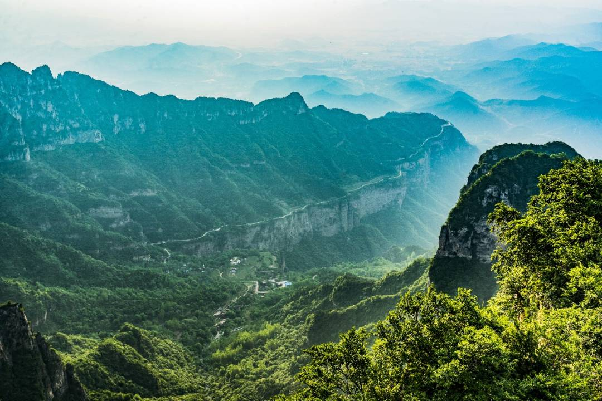
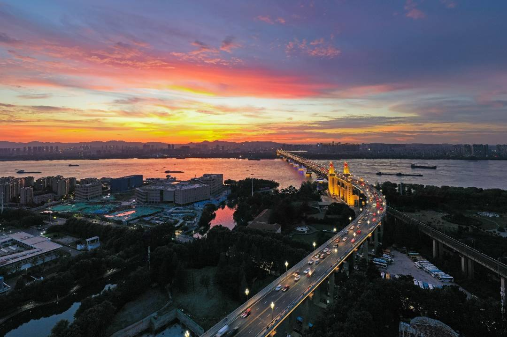

古人眼里的中国
都说读万卷书，行万里路，相信很多人都有着一个游遍中国的梦想。中华上下五千年的历史中，有无数文人墨客在中国的版图上留下了千古绝唱，跟随这些古诗词，我们便可以畅游中国，一览中华神采。
↑ 从西至东依次下降的地势（图源@知乎 远方的田野）
中国幅员辽阔，西起世界之巅青藏高原，东至千里沃土曲折海岸，北往皑皑白雪大兴安岭，南来四季如春山海画廊。中国的地势呈西高东低之势，依昆仑山脉-阿尔金山脉-祁连山脉-横断山脉、大兴安岭-太行山脉-巫山-雪峰山两条分界线自西向东分为一、二、三这三级阶梯。
今天我们就拾级而上，顺着三级阶梯在诗词中感受古人的浪漫。
↑ 祁连山夏日夕照
↑ 南太行风光
第三级阶梯
第三级阶梯主要包括了东北平原、华北平原和长江中下游平原。东北平原四周多为山麓洪积冲积平原和台地；华北平原地势更加平缓，发育有洪积、冲积、湖积和海积平原等多种地形；而长江中下游平原则多有泛滥平原和滨海平原。
↑ 东北平原哈尔滨静谧的村庄
↑ 富庶的华北平原
↑ 长江中下游平原
这些肥沃的土地孕育了万顷良田，这才有了北方那“春种一粒粟，秋收万颗子”、“夜来南风起，小麦覆陇黄”的丰收喜悦，也有了南方那“千里莺啼绿映红，水村山郭酒旗风”、“稻花香里说丰年，听取蛙声一片”的怡然自得。
↑ 北方金黄色的秋天
↑ 南方青翠的水田
除了广泛分布的平原外，第三阶梯中还普遍发育有丘陵地形，包括辽东丘陵、山东丘陵和东南丘陵。辽东丘陵一般指辽东半岛，整个半岛呈东北-西南走向；山东丘陵则是位于黄河以南、京杭运河以东大范围的山东半岛；而东南丘陵是中国三大丘陵之首，通常指中国东南部一带的丘陵，是北至长江，南至两广的大片低山和丘陵的总称。
而在地势普遍较低的丘陵、平原地区，伫立着几座巍峨的高山。在山东地区有“会当凌绝顶，一览众山小”的雄伟泰山，在江西地区也有“横看成岭侧成峰，远近高低各不同”的奇巧庐山。
↑ 泰山云海
↑ 冰雪覆盖的庐山
这些平原丘陵向东延伸，就连接着中国东部蜿蜒的海岸线，向海连接着大陆架，同样也连接着古人们对于远方的畅想。三国时，曹操曾咏叹过“东临碣石，以观沧海。水何澹澹，山岛竦峙”；唐朝时，李白站在钱塘江大潮前感慨过“浙江八月何如此，涛似连山喷雪来”；宋朝时，苏轼曾面对海市蜃楼时惊叹到“郁郁苍梧海上山，蓬莱方丈有无间”。
↑ 海中耸立的山石
↑ 钱塘江大潮
↑ 蓬莱仙境
第二级阶梯
跨过纵横蜿蜒的太行山和苍翠起伏的大兴安岭，便是中国的第二级阶梯。第二级阶梯位于中国中部和北部，主要包括内蒙古高原、黄土高原、云贵高原以及准噶尔盆地、四川盆地和塔里木盆地六个部分。
↑ 准噶尔盆地西部的艾比湖红海滩
↑ 冬天的塔里木盆地
内蒙古高原自然可以见到“天苍苍，野茫茫，风吹草低现牛羊”的悠然辽阔，而继续向黄土高原前进，则遍布着戈壁、沙漠，赋予了这广袤浩渺的大西北一种神秘而苍凉的气质。纵马在戈壁中，是“大漠孤烟直，长河落日圆”的壮阔，也是“羌笛何须怨杨柳，春风不度玉门关”的萧瑟。中国的大西北，从古至今一直保持着那份悲壮却雄浑英气的独特气质。
↑ 广袤的内蒙古草原
↑ 壮阔悲凉的大漠落日
↑ 萧索的戈壁风光
但第二阶梯中的云贵高原则显示出了与众不同的气质，它坐落在中国西南部，西起横断山、哀牢山，东至武陵山、雪峰山，拥有着丰富多样的自然环境，也伴随着险峻崎岖的地势地形。“地崩山摧壮士死，然后天梯石栈相钩连”正是这“难于上青天”的蜀道最为真实的写照，也正是这陡峻的地形，孕育了丰富多彩的民族文化。它是我国少数民族种类最多的地区，同时也是中国森林植被类型最为丰富的区域，可以说是镶嵌在我国东南边境上的一颗明珠。
↑ 旅游胜地——稻城亚丁

↑ 远方的玉龙雪山
第一级阶梯
第一级阶梯位于我国的最西部，约占我国面积的四分之一，包括了青藏高原和柴达木盆地两部分。青藏高原作为“世界屋脊”，拥有着4000m以上的平均海拔，高原上星罗棋布地点缀有纳木措、青海湖等著名的内陆湖。
↑ 青藏高原上的生灵
↑ 高原上的青海湖
这里氧气稀薄、气候寒冷，但却并不是无人踏足。在唐朝时，就有许许多多的唐人走着唐蕃古道，欣赏高原风光，咏叹“地险达般岭，天通穆鲁河。噶达苏屹老，超蹀快如何”；后来更是有了茶马古道的出现，伴着阵阵茶香以及“崎岖道仄鸟难飞，得得寻芳上翠微”的幽微心境，古人们用自己的勤劳智慧连接起了第一阶梯与第三阶梯，搭建起了举世闻名的贸易道路。
↑ 古人的智慧，高原上的布达拉宫

↑ 历史悠久的茶马古道
但说到贸易与资源，柴达木盆地不容小觑。它地处青海省西北部，不仅富盐，更是有着丰富的石油、煤以及各种多金属矿藏，堪称我国的“聚宝盆”。而随着现代科技的发展，一三级阶梯间不仅连接有茶马古道，更有着西气东输、西电东送等多项令世界瞩目的成就。中国人用自己的智慧，克服了东西巨大的地势差，连接起中国的传奇。
↑ 柴达木盆地中的翡翠湖
在第一级阶梯内的青藏高原和柴达木盆地，更是被众多高山环绕。其北边是昆仑山、阿尔金山和祁连山，东边是岷山、横断山脉，南侧则是世界海拔最高的山脉——喜马拉雅山脉。
↑ 世界最高峰——珠穆朗玛峰
其中，昆仑山脉西起帕米尔高原，在中国境内跨青海、四川、新疆和西藏四省，然而它不仅支撑起高原地貌，更支撑起我们对华夏文明发源的探究。昆仑山脉在中国神话体系中拥有如此重要的位置，和它奇伟壮丽的自然风貌有着密不可分的联系，毛主席曾赞它道“横空出世，莽昆仑，阅尽人间春色“，昆仑山那绝美的神迹可见一斑。
↑ 昆仑山的绝美风光
由西向东，这三级阶梯组成了中国960万平方公里的领土，而黄河和长江两条母亲河则串联起了中华民族的魂。它们发源于第一级阶梯上那些雄峰之间，分为南北两支，向东奔腾入海。
流经第二级阶梯，黄土高原赋予黄河那浑厚的土黄色，赋予了它“黄河远上白云间，一片孤城万仞山”的那股大西北特有的苍凉悲壮。进入第三级阶梯后，那股坚定悲壮的气质更是吸引了无数文人为其折腰，王之涣咏叹“白日依山尽，黄河入海流”，李白也赞它“黄河之水天上来，奔流到海不复回”。
↑ 壮丽的黄河壶口瀑布
↑ 黄河入海口的日出
▼
而向南走的长江则有着截然不同的气质。自高原流入第二级阶梯后，周围险峻的地势使得“天门中断楚江开，碧水东流至此回”，更有着“滚滚长江东逝水，浪花淘尽英雄”的洒脱奔放。而这种地势下那滚滚奔流的长江，在进入第三级阶梯那平原和丘陵后，变得温柔平和起来。缓缓流逝的长江带着“日日思君不见君，共饮长江水“的相思，又平添了一份“无边落木萧萧下，不尽长江滚滚来”的萧索。
↑ 雄浑的西陵峡
↑ 长江入海口的夜色
从西到东，三级阶梯次第分布，无数高山错落起伏，无数河流奔腾不息。这些独属于中国三大阶梯的风景，是自然送给我们中华儿女最美的礼物；而古往今来，那无数的诗篇也是中华民族最珍贵的精神瑰宝。只叹道：江山如此多娇，引无数英雄竞折腰！更要说：俱往矣，数风流人物，还看今朝！
（风景图均源自图虫创意）